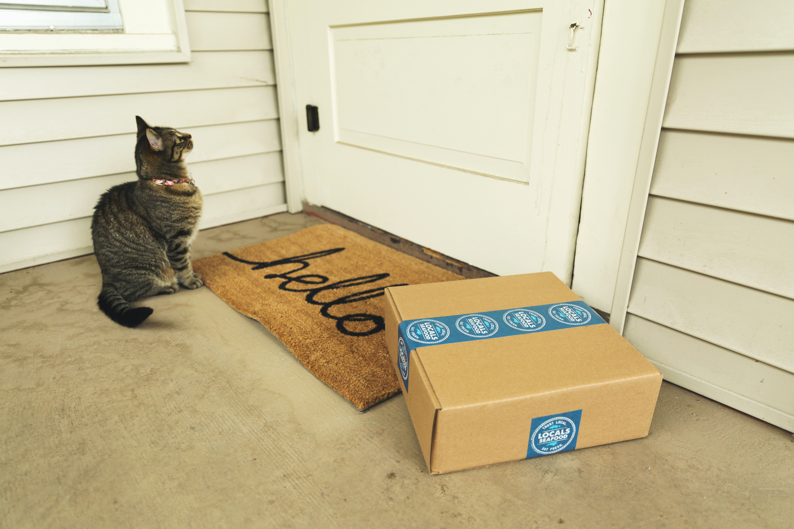
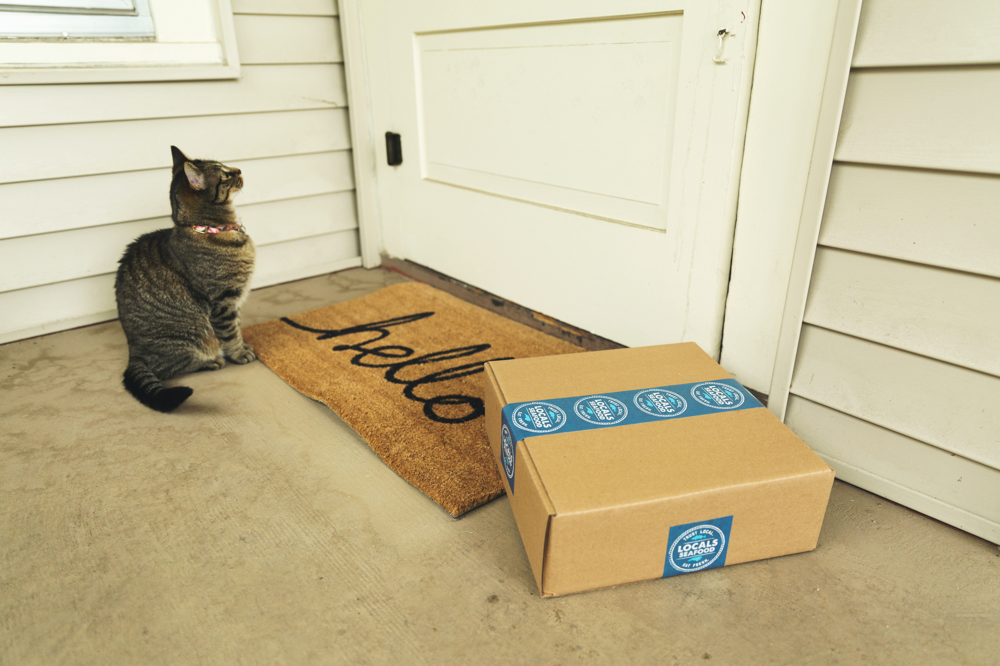

December 25, 2023
The FMCG (Fast-Moving Consumer Goods) supply chain optimization dataset is a collection of data related to the supply chain operations in the FMCG industry. This provides insights and patterns for optimizing the FMCG supply chain processes.
This Analysis is usefull in production efficiency, improving demand forecasting accuracy, managing inventory levels effectively, optimizing transportation routes, enhancing supplier relationships, and overall supply chain optimization to minimize costs and maximize customer satisfaction.
 

This Analysis provides infomation about the various shipping ports and operations around the world. The report provides a comprehensive insights into global shipping activities, port operations, and infrastructure to support various analyses and decision-making processes for businesses, logistics companies, government agencies, and researchers involved in maritime trade and transportation.

This reports provides a breakdown of energy usage in different sectors and highlights how much energy each sector consumes and how it may vary over time.

This report provides information on the covid 19 in China , highlighting the various areas of impact, whiles it provides insights on how to reduce the spread.

This Analysis provides birth rates and related data across the 50 states and DC from 2016 to 2021. The data was sourced from the Centers for Disease Control and Prevention (CDC) and includes detailed information such as number of births, gender, birth weight, state, and year of the delivery.

This dataset provides health insurance coverage data for each state and the nation as a whole, including variables such as the uninsured rates before and after Obamacare, estimates of individuals covered by employer and marketplace healthcare plans, and enrollment in Medicare and Medicaid programs.

This Analysis is frpm a survey conducted by Google Forms from University students to examine their current academic situation and mental health.The Analysis provides insights on students related health issues that affect their studies

This Analysis provides valuable insights on the food app business for potential growth in the food business

The Trade and Finance Analysis provides a comprehensive view of global economic and financial activity, serving as a valuable resource for research, analysis, and decision-making in the fields of economics, finance, and international trade.

This analysis is commonly used in the field of customer relationship management (CRM) and includes various attributes that provide insights into customer behavior, interactions and reasons for discontinuing their relationship with the company. This Analysis serves as a valuable resource for understanding customer behavior, improving customer retention efforts, and enhancing the overall customer experience. It is widely used across industries to optimize customer relationships and minimize customer attrition.

The Customer Flight Satisfaction Analysis serves as a valuable resource for airlines and aviation industry stakeholders to make use of these insights into passenger experiences, improve service quality, and enhance customer satisfaction, ultimately contributing to better customer retention and loyalty.